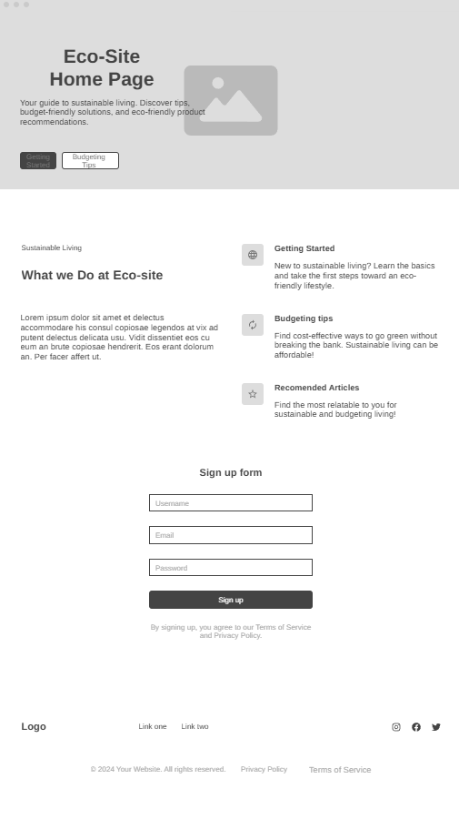

Overview
Purpose
EcoSimple aims to break down sustainable living into manageable, budget-friendly steps that anyone can follow. The website provides practical, tested tips for reducing environmental impact while saving money, focusing on achievable small changes rather than complete lifestyle overhauls or expensive eco-products.
Audience
Our target audience includes budget-conscious individuals interested in sustainability, particularly students, families, and individuals in various living situations (dorms, apartments, houses). They are people who care about environmental issues but feel overwhelmed by complicated solutions and expensive eco-products. They value practical, tested advice and are looking for cost-effective ways to make a positive environmental impact.
Branding
Website Logo

Style Guide
Color Palette
Palette URL:
https://coolors.co/7fa488-8b7355-ffffff-a4c4d4-f4d03f| Primary | Secondary | Accent 1 | Accent 2 |
|---|---|---|---|
| [#7FA488] | [#8B7355] | [#A4C4D4] | [#F4D03F] |
Typography
Heading Font: Montserrat
This clean, modern font provides excellent readability while maintaining a professional appearance.
Paragraph Font: Open Sans
Open Sans is highly readable and works well for longer content. It pairs nicely with Montserrat and maintains the clean, which is exactly what i want for the site.
Normal paragraph example
The best way to get started with sustainable living is to focus on small, achievable changes. Start with simple actions like reducing single-use plastics, turning off lights when leaving a room, or starting a basic composting system.
Colored paragraph example
Living sustainably doesn't have to be expensive or complicated. Many eco-friendly choices, like using a reusable water bottle or shopping with cloth bags, can actually save you money while helping the environment.
Navigation
Site Map
Content
Home page
Why EcoSimple Exists
Welcome to EcoSimple, where sustainable living meets practical solutions. We believe that making environmentally conscious choices shouldn't strain your budget or complicate your life. Our mission is to break down sustainable living into manageable, budget-friendly steps that anyone can follow, regardless of their living situation or financial constraints.
Common Sustainability Challenges
Many people believe that living sustainably requires expensive eco-products, complex lifestyle changes, or sacrificing comfort. The truth is that mainstream "green" marketing often makes sustainability seem more complicated and costly than it needs to be. At EcoSimple, we cut through the noise to focus on practical changes that make real environmental impact without breaking the bank.
Our Approach
We test every sustainability tip and trick ourselves before recommending it to our community. Each recommendation comes with a cost-benefit analysis so you can see exactly how a change impacts both your environmental footprint and your wallet. We prioritize solutions that save you money while reducing resource consumption—proving that eco-friendly choices can be economically smart too.
Images for the Home page
Budget-Friendly Tips
Kitchen Sustainability
The kitchen is often the hub of household resource consumption. Simple changes like using cloth towels instead of paper ones can save up to $100 annually while preventing deforestation. Installing a simple faucet aerator costs under $5 but can reduce water usage by 30%, lowering your utility bills. Even meal planning can have environmental benefits—reducing food waste by planning meals saves the average family $1,500 per year while preventing methane-producing food waste in landfills.
Energy Conservation
Most homes waste electricity without realizing it. By identifying and addressing "phantom energy" usage—appliances that consume power even when turned off—you can reduce your electricity bill by up to 10% simply by using power strips. Switching to LED bulbs might cost more upfront but saves approximately $55 per bulb in energy costs over its lifetime while using 75% less energy than incandescent options.
Sustainable Shopping
Thoughtful consumption is at the heart of sustainability. Before purchasing new items, consider borrowing, buying second-hand, or repurposing what you already own. When shopping becomes necessary, investing in durable, repairable items reduces long-term spending and waste generation. For example, a $20 quality water bottle can replace approximately 167 disposable bottles annually, saving you money after just a few months while preventing plastic pollution.
DIY Cleaning Solutions
Commercial cleaning products often contain harmful chemicals and come in single-use plastic packaging. Simple ingredients like vinegar, baking soda, and citrus can clean most household surfaces effectively at a fraction of the cost. Our tested recipes for all-purpose cleaners, glass cleaners, and laundry solutions save the average household $200+ annually while reducing chemical exposure and plastic waste.
Images for the Budget-Friendly Tips page

Getting Started Guide
Assessing Your Current Habits
Every sustainability journey begins with awareness. Our printable home assessment helps you identify resource usage patterns and prioritize changes for maximum impact. By tracking your current consumption of energy, water, disposable products, and food waste for just one week, you'll discover opportunities for improvement that align with your specific lifestyle.
Starting Small
Sustainable living is most successful when approached gradually. Choose 1-2 changes to implement each month rather than overhauling your entire lifestyle at once. Beginning with high-impact, low-effort changes—like switching to reusable shopping bags or installing a programmable thermostat—builds momentum and confidence for more significant adjustments later.
Common Pitfalls to Avoid
Many newcomers to sustainability fall into the "eco-perfectionism" trap, feeling that anything less than zero waste or carbon neutrality is failure. Remember that every positive change reduces your environmental impact, even if it's small. Similarly, avoid the trap of "buying green" before using what you already have—the most sustainable product is often the one you don't buy at all.
Building Sustainable Habits
Lasting change comes from habit formation rather than willpower. We recommend using the "habit stacking" technique: attach a new eco-friendly habit to an existing routine. For example, hanging reusable bags by the door or keeping a water bottle next to your keys creates environmental triggers that make sustainability automatic rather than effortful.
Images for the Getting Started Guide

Wireframes
[wireframes]
Home
[In progress]
Budget-Friendly Tips
[In progress]
Getting Started Guide
[In progress]